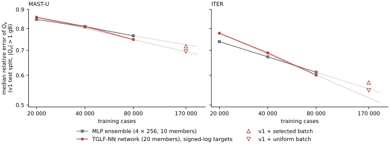
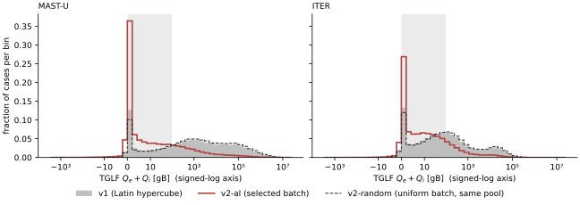
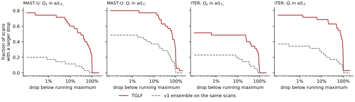
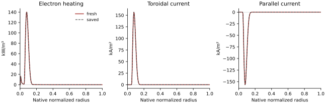

Surrogates
Purpose
Fast models of TGLF’s turbulent fluxes, so that the coupled loop of M1 can call a turbulence model at every radius and time step. Each surrogate is a deep ensemble: the members’ mean is the prediction, and their spread is the uncertainty the guard reads. Each trained model is written once, read-only, with a provenance record that binds it to the digest of the dataset it was trained on (brief invariant 6).
The brief’s M3 acceptance criteria are: held-out accuracy meets the target in the configuration; the surrogate is differentiable and runs inside the M1 loop; the end-to-end speedup is measured and reported. Dataset v3 and its final ReLU/monotone models are complete. The monotone models pass the held-out transport target and the strict local loop checks at a tighter Newton tolerance; matched final-model timing remains in progress. The sampled structure checks, threshold-classification limits and uncalibrated spread are documented below.
This page includes the results prepared for draft entries 21–34. TGLF itself, the sampling space and the version 1 datasets are on the datasets page.
Data, inputs and splits
Datasets. One per machine, tglf-mastu-v1 and tglf-iter-v1 (100000 of 100000 cases completed, all six fluxes finiteC-071, 100000 of 100000 cases completed, all six fluxes finiteC-072), 105 cases each. Every case is kept: no filter on flux magnitude (owner, OQ-18; ceiling K-019). Loading a dataset recomputes its SHA-256 and refuses it if the digest differs from its provenance record.
Splits. A random permutation from the machine’s seed (MAST-U 0, ITER 1) gives a test split (10%), a validation split (10%) and a training split (80%). The indices are saved with every model. The test split is evaluated once, after training; the validation split chooses each member’s kept parameters and the stopping epoch. For the learning curves a fixed random fraction of the training split is kept (validation and test unchanged). Each active-learning batch has a fixed holdout of 10% of its cases (its own seed), the same rows for every model.
Inputs and outputs.
MLP ensemble (ens). The 17 sampled TGLF inputs: BETAE, DELTA_LOC, DRMAJDX_LOC, KAPPA_LOC, Q_LOC, RLNS_1, RLTS_1, RLTS_2, RMAJ_LOC, RMIN_LOC, SHAT, S_DELTA_LOC, S_KAPPA_LOC, TAUS_2, VEXB_SHEAR, XNUE, ZEFF, with XNUE and Q_LOC as \(\log_{10}\). The derived inputs are functions of these and are left out. Outputs: all six fluxes, \(\Gamma_e, \Gamma_i, \Gamma_\mathrm{imp}, Q_e, Q_i, Q_\mathrm{imp}\).
TGLF-NN network (tglfnn, tglfnn_symlog). GA’s inputs that vary in our datasets (18): AS_2 (it carries \(Z_\mathrm{eff}\)), BETAE, DELTA_LOC, DRMAJDX_LOC, KAPPA_LOC, P_PRIME_LOC, Q_LOC, Q_PRIME_LOC, RLNS_1, RLTS_1, RLTS_2, RMAJ_LOC, RMIN_LOC, S_DELTA_LOC, S_KAPPA_LOC, TAUS_2, VEXB_SHEAR, XNUE, with BETAE and XNUE as \(\log_{10}\), as GA does. Outputs: \(\Gamma_e, Q_e, Q_i\). GA’s fourth output, the ion momentum flux, was not stored by M2.
Fluxes are in TGLF’s gyro-Bohm units (gB) with UNITS = CGYRO, as stored by M2. All inputs are standardised with the training split’s mean and standard deviation.
Output scaling
Two target transforms are implemented; both are followed by standardisation with the training split’s mean and standard deviation.
- Signed-log (owner, OQ-18): \(t = \mathrm{sign}(Q)\,\ln(1 + |Q|/s)\), \(s = 1\) gB, inverse \(Q = \mathrm{sign}(t)\,s\,(e^{|t|} - 1)\). It keeps the sign, is linear near zero and logarithmic in the tail.
- Linear (
standard), as in GA’s TGLF-NN: the flux itself is standardised.
Why linear scaling fails on these datasets. Standardising divides each flux by its standard deviation over the training split, and the high-flux tail sets that value: 2.5 × 105 gB (MAST-U) and 1.1 × 104 gB (ITER); the median |Q_e|, 473 and 29 gB, is 0.0019 and 0.0027 standard deviationsC-085. With a squared-error loss in standardised units, an error as large as the typical flux itself changes the loss by the square of that small fraction, while the tail cases contribute errors of order one. The optimiser therefore fits the tail and has almost no signal from typical cases. Measured: the TGLF-NN network with linear outputs is off by about an order of magnitude at the median, and its \(R^2\) in signed-log space is negative, worse than predicting the mean (MAST-U 9.1 (Q_e) and 17.7 (Q_i); ITER 6.8 and 7.0; R² of Q_e in signed-log space -0.30 (MAST-U) and -0.35 (ITER)C-078). It also agrees less often with TGLF on which cases are stable (TGLF-NN, signed-log 0.91 (MAST-U) and 0.92 (ITER); MLP 0.91 and 0.92; TGLF-NN, linear outputs 0.79 and 0.77C-082). GA’s training fluxes come from measured profiles and stay in a bounded range (GA’s MAST-U model -1.5 × 104 to 5.2 × 104 gB; tglf-mastu-v1 -2.4 × 106 to 2.8 × 107 gBC-086), where linear scaling resolves typical cases.
Member networks
Baseline MLP ensemble
eqx.nn.MLP: input layer, four hidden layers of 256 units with GELU, linear output layer; 10 members. Parameters per member: 21 827 per member (TGLF-NN network) against 203 526 (MLP)C-080. The configuration’s top-level keys (configs/surrogates/m3_tglf.yaml) are this variant; every other variant overrides them key by key.
TGLF-NN recreation
The member network of GA’s TGLF-NN, as read from the model files sat2_em_mastu_azf+-1 and sat2_em_iter4_azf-1 in TurbulentTransport.jl (commit 212a9a7, Apache-2.0): a dense input layer to width 32 with ELU; five residual blocks, each three dense layers of width 32 with ELU and a fourth without activation, whose output is added to the block’s input and passed through ELU; a linear output layer. 20 members. GA’s trained weights are not used.
The residual member, tkit/surrogates/models.py @ f4da0c0:
def __call__(self, x: Array) -> Array:
h = jax.nn.elu(self.inp(x))
for block in self.blocks:
r = h
for layer in block[:-1]:
r = jax.nn.elu(layer(r))
h = jax.nn.elu(h + block[-1](r))
return self.out(h)What is GA’s and what is ours. From GA’s model files: the layer sizes, the activations, the residual structure, the number of members, the inputs taken in \(\log_{10}\), and linear output standardisation. GA’s model takes 29 inputs; four of them (DEBYE, ZETA_LOC, ZMAJ_LOC, VPAR) are not set in our datasets, and four (RLNS_2, RLNS_3, RLTS_3, TAUS_3) equal main-ion values there, which leaves the 18 above. GA’s training data are TGLF runs on inputs from measured profiles, and GA’s training procedure (loss, optimiser, epochs) is not published. Ours is used for every variant: the loss, optimiser and stopping rule of Algorithm 1, on the M2 datasets. GA has not reviewed or endorsed this work.
Training
Algorithm 1: training an ensemble (as in tkit.surrogates.train.fit)
input: training (x, t), validation (x_v, t_v), members M, epochs E, batch B, patience P
standardise x and t with the training split's mean and standard deviation
initialise M members from independent keys
optimiser: AdamW, learning rate cosine-decayed from lr_0 over all steps, weight decay w
best_m = +inf for every member m; since = 0
for epoch = 0 .. E-1:
each member draws its own permutation of the training set
for each step: member m takes its own minibatch of B cases;
loss = sum over m of the mean squared error of m; one AdamW update
v_m = mean squared error of member m on the validation split
for each m with v_m < best_m: keep member m's parameters; best_m = v_m
since = 0 if any member improved, else since + 1
if since >= P: stop
return the ensemble with each member's kept parametersThe members share the data, the architecture and the optimiser, and differ in initialisation and minibatch order. The loss is summed over members so that one compiled step updates all of them; each member’s gradient depends only on its own term.
Overfitting. Every variant overfits: the members’ mean validation loss reaches its minimum and then rises while the training loss keeps falling (epochs 16-25 for the MLP and the TGLF-NN network with linear outputs; 161-224 for the TGLF-NN network on signed-log targetsC-087). Each member keeps its best-validation parameters, so the saved ensemble is the one at the minimum, member by member.
Cost. 13 s (MLP, 10 members, 80000 cases); 39-53 s (TGLF-NN, 20 members, 80000 cases); 70-109 s (TGLF-NN, 170000 cases)C-088. Training cost is not a constraint at this dataset size.
Parameters and defaults
| parameter | default | config key | notes |
|---|---|---|---|
| members | 10 (MLP), 20 (TGLF-NN) | model.n_members |
the brief asks for 5–10; TGLF-NN uses GA’s 20 |
| width, depth | 256, 4 hidden layers (MLP) | model.width, model.depth |
|
| width, blocks, layers per block | 32, 5, 4 (TGLF-NN) | model.width, n_blocks, block_depth |
arch: resnet |
| epochs, patience | 600, 60 | train.epochs, train.patience |
patience counts epochs in which no member improved |
| batch | 1024 | train.batch |
per member |
| learning rate, weight decay | 10−3 cosine-decayed, 10−5 | train.lr, train.weight_decay |
AdamW |
| target transform | signed-log, \(s = 1\) gB | target_transform |
standard for GA’s linear scaling |
| splits | 10% test, 10% validation | split |
seed per machine |
| relative-error floor | 1 gB | metrics.flux_floor |
|
| stable if | \(Q_e + Q_i < 1\) gB | metrics.stable_below |
Metrics
Every variant is scored in the same way, whatever its training transform, so variants compare directly. The prediction is the members’ mean in the training space, mapped back to gB.
- Relative error per case, \(|\hat Q - Q|/|Q|\), on cases with \(|Q| > 1\) gB, for \(Q_e\) and \(Q_i\); reported as the median and the 90th percentile, and as the median in the near-threshold band \(1 < |Q| \le 100\) gB.
- \(R^2\) and RMSE of each output in signed-log space (\(s = 1\) gB).
- Coverage: the fraction of cases whose TGLF value, in signed-log space, lies within the members’ mean ± 2 standard deviations.
- Stable/unstable agreement: the fraction of cases on which the ensemble and TGLF agree whether \(Q_e + Q_i < 1\) gB.
The figure script re-evaluates the saved round-1 models with its own code and reproduces the stored medians; it also computes 95% bootstrap intervals over the test cases (1000 resamples, paired across models), which the training code does not.
Results on the version 1 datasets
Held-out test split, 10000 cases per machine. GPU jobs 2318567 (baseline, commit 50d9e38) and 2319237 (TGLF-NN variants and learning curves, commit f4da0c0).
| quantity | value |
|---|---|
| median relative error of \(Q_e\), \(Q_i\): MLP ensemble, signed-log | MAST-U 0.77 (Q_e) and 0.80 (Q_i); ITER 0.61 and 0.62C-077 |
| the same, TGLF-NN network with linear outputs | MAST-U 9.1 (Q_e) and 17.7 (Q_i); ITER 6.8 and 7.0; R² of Q_e in signed-log space -0.30 (MAST-U) and -0.35 (ITER)C-078 |
| the same, TGLF-NN network on signed-log targets | MAST-U 0.75 (Q_e) and 0.77 (Q_i); ITER 0.60 and 0.58C-079 |
| parameters per member | 21 827 per member (TGLF-NN network) against 203 526 (MLP)C-080 |
| ±2σ coverage of \(Q_e\) (signed-log) | TGLF-NN network 0.63 (MAST-U) and 0.66 (ITER); MLP ensemble 0.54 and 0.57C-081 |
| stable/unstable agreement | TGLF-NN, signed-log 0.91 (MAST-U) and 0.92 (ITER); MLP 0.91 and 0.92; TGLF-NN, linear outputs 0.79 and 0.77C-082 |
| rank correlation of member spread with error | 0.39-0.51 for the MLP ensemble and 0.53-0.62 for the TGLF-NN networkC-089 |
With signed-log targets the TGLF-NN network and the MLP ensemble reach the same accuracy within the bootstrap interval, and the TGLF-NN network’s spread covers TGLF more often. Neither spread is calibrated: a calibrated Gaussian spread would cover 95% of cases at ±2σ. Calibration (conformal, M4) is not done yet. The member spread ranks the errors only weakly (0.39-0.51 for the MLP ensemble and 0.53-0.62 for the TGLF-NN networkC-089). The errors are lower on ITER than on MAST-U for every variant; the MAST-U box is wider in every kinetic input (see the datasets page), and we have not separated that from the shape of the machine.
All metrics of every model (90th percentiles, \(R^2\), RMSE, Γ outputs, validation and test) are in m3_metrics.csv.
Learning curves

CSV: m3_learning_curves.csv. Provenance: models of jobs 2319237 (commit f4da0c0, clean tree) and 2318567 (commit 50d9e38, dirty tree recorded); figure script blog/figures/make_m3_surrogates.py.
Each curve has three points, 20000, 40000 and 80000 training cases, with the validation and test splits fixed. Fitted slopes: -0.10 (MAST-U) and -0.19 (ITER) for the TGLF-NN network; -0.07 and -0.14 for the MLPC-083. If the curves kept these slopes, a median error of 0.30 on \(Q_e\) would need about 3 × 106 cases (ITER) and about 109 (MAST-U)C-084. That extrapolation spans orders of magnitude beyond the data and gives only the scale. Both networks give nearly the same curves, which points to the data rather than the network as the limit; we have not tested that directly.
Active learning, round 1
The brief’s M2 task “active learning near critical gradients” was moved to after the first surrogates (OQ-18 a), so that a trained ensemble could choose the points. Code: tkit.datasets.tglf_active (commit 352f879).
Algorithm 2: one round (as in tkit.datasets.tglf_active.run)
input: machine's approved region R and alpha_MHD cap, trained ensemble F, pool size N_p,
batch size n, tau, pool seed (disjoint from v1's)
pool = sample_region(R, N_p, seed) # Algorithm 1 of the datasets page
for each pool point x:
members' Q_e, Q_i -> signed-log (s = 1 gB)
sigma(x) = members' std, averaged over Q_e and Q_i
q(x) = members' mean of Q_e + Q_i (gB)
s(x) = sigma(x) * exp(-|symlog(q(x))| / tau)
selected = n indices drawn with probability proportional to s, without replacement
uniform = n indices drawn uniformly from the pool minus `selected`
save the selection (before any TGLF run; reused if the job is resubmitted)
label both batches with TGLF -> datasets tglf-<machine>-v2-al, tglf-<machine>-v2-randomSampling without replacement in proportion to \(s\) uses Gumbel top-\(k\): add independent Gumbel noise to \(\ln s\) and keep the \(n\) largest. It spreads the batch over the high-score region instead of taking only the \(n\) highest scores. tkit/datasets/tglf_active.py @ 352f879:
keys = np.log(np.maximum(score, 1e-300)) + rng.gumbel(size=len(score))
al = np.sort(np.argsort(-keys)[:n])
rest = np.setdiff1d(np.arange(len(score)), al)
rand = np.sort(rng.choice(rest, size=n, replace=False))Settings: the TGLF-NN ensemble trained on v1 with signed-log targets scores the pool; \(N_p = 10^6\), \(n = 10^5\), \(\tau = 2\), pool seeds 100 (MAST-U) and 101 (ITER), against 0 and 1 for v1. Score, first version, rejected. \(\sigma\,(1 + \text{proximity})\) was tried first on a test pool before any TGLF run. Its batch followed \(\sigma\) alone, and \(\sigma\) is largest far above threshold, so it would have selected high-flux cases. The product form makes proximity to zero flux a factor.
Labelling. 4 × 105 cases, all completed with finite fluxes; 1 h 16 min (MAST-U) and 1 h 15 min (ITER)C-090, at the same TGLF settings as v1.
Where the selected batch landed

CSV: m3_al_flux.csv (histograms) and m3_datasets.csv (per dataset: bins, sign fractions, digests). Provenance: datasets tglf-<machine>-v2-al and -v2-random written at commit 352f879 (clean tree), jobs 2319519 and 2319520; figure script blog/figures/make_m3_surrogates.py.
By TGLF’s own fluxes, below 1 gB / 1–100 gB / above 104 gB: MAST-U 16% / 18% / 28% in v1 against 45% / 31% / 5% in the selected batch; ITER 17% / 39% / 10% against 35% / 47% / 2%C-091. The selecting ensemble expected fewer stable cases than TGLF found, and the batch’s mean member disagreement is lower than the pool’s (predicted below 1 gB: 24% (MAST-U) and 19% (ITER), against 45% and 35% from TGLF; mean disagreement 0.58 against 0.69 for the pool (MAST-U), 0.46 against 0.51 (ITER)C-092): the proximity factor, not the disagreement, decided the selection. The uniform batch is drawn from what the selected batch left, so it is slightly depleted of low-flux cases relative to v1 (see the row of C-091); that works against the uniform control near threshold, not for it.
Retraining against the uniform batch
Three TGLF-NN ensembles per machine, signed-log targets, the same settings: v1 only (80000 training cases), v1 plus the selected batch’s non-holdout rows, v1 plus the uniform batch’s (170000 each). Validation and the v1 test split stay v1’s. GPU job 2321323 (commit 352f879); the v1-only models are scored on the batch holdouts by tkit.surrogates.evaluate.
Median relative error of \(Q_e\), on the v1 test split / the selected batch’s holdout / the uniform batch’s holdout (10000 cases each):
| training data | MAST-U | ITER |
|---|---|---|
| v1 only | 0.75 / 0.85 / 0.76C-093 | 0.60 / 0.69 / 0.59C-096 |
| v1 + selected batch | 0.72 / 0.81 / 0.73C-094 | 0.57 / 0.64 / 0.55C-097 |
| v1 + uniform batch | 0.69 / 0.81 / 0.70C-095 | 0.55 / 0.62 / 0.52C-098 |
- Both batches help, by about what the learning curve gives for the larger training set: fit 0.70 (MAST-U) and 0.52 (ITER); measured 0.72 and 0.57 with the selected batch, 0.69 and 0.55 with the uniform batchC-101.
- The uniform batch helps as much or more on every test set. Uniform minus selected, paired bootstrap over the test cases: on the selected batch’s holdout 0.000 (-0.013 to 0.009) for MAST-U and -0.015 (-0.028 to -0.003) for ITER; on the v1 test split -0.023 (-0.033 to -0.014) and -0.027 (-0.040 to -0.015)C-099. On the selected batch’s own holdout, where the selected-batch model trained on the same distribution, the two tie on MAST-U and the uniform batch is ahead on ITER. \(Q_i\) follows the same pattern (m3_metrics.csv).
- Near threshold (\(1 < |Q| \le 100\) gB) on the selected holdout: MAST-U Q_e 0.77 against 0.78, Q_i 0.74 against 0.73; ITER Q_e 0.58 against 0.57, Q_i 0.54 against 0.52C-100.
- The selected cases are harder: every model has its largest error on the selected holdout, and the stable/unstable agreement there is lower than on the other test sets (m3_metrics.csv).
Finding. Round 1 of active learning did not beat uniform sampling. Concentrating training cases near threshold reduced the error there by no more than the same number of uniform cases did, and reduced it less elsewhere.
What we have measured and what we have not. Measured: the member disagreement is weakly related to the actual error (0.39-0.51 for the MLP ensemble and 0.53-0.62 for the TGLF-NN networkC-089), and the selection was decided by predicted proximity to zero flux rather than by disagreement (predicted below 1 gB: 24% (MAST-U) and 19% (ITER), against 45% and 35% from TGLF; mean disagreement 0.58 against 0.69 for the pool (MAST-U), 0.46 against 0.51 (ITER)C-092). Not measured: why the near-threshold cases stay hard. One possible reason is that near threshold the flux is small and changes fast with the inputs, so relative errors there stay large whatever the sampling density; we have not tested it. The check of round 1 does not depend on the selecting ensemble: the outcomes are TGLF’s fluxes on held-out cases, and the control batch comes from the same pool.
Consequence. With the current sampling space, more uniform data is the cheaper route to lower error, and the learning curves put the target out of reach that way (about 3 × 106 cases (ITER) and about 109 (MAST-U)C-084). The next dataset changes what is sampled (OQ-19 1): see next steps.
Heat-flux sign and the ReLU output
The brief asks for physics structure in the surrogates: zero flux below threshold, positivity, monotonicity in gradients. TGLF’s own heat fluxes are not always positive. Over the six TGLF datasets: Q_e < 0 in 2.0-6.5% of cases (below -1 gB in 0.5-1.5%; median of the negative values -0.03 to -0.09 gB); Q_i < 0 in 9.4-14.1% (below -1 gB in 2.2-5.1%); particle fluxes negative in 33-54%C-102. The negative \(Q_e\) values are small; the negative \(Q_i\) values have a long tail, and they occur where the electron channel dominates: Q_e > 0 in 97% (MAST-U) and 95% (ITER) of them, with median Q_e / |Q_i| of 69 and 34; lowest Q_i -6.9 × 106 gB (MAST-U) and -6.5 × 104 gB (ITER)C-103. Negative particle fluxes are inward flux and physical.
Owner decision (OQ-19 3): \(Q_e\) and \(Q_i\) are clipped at zero in use, exactly zero below threshold and never negative; the particle fluxes keep their sign. Built at commit 9a036a6.
Clip in use, stability penalty in training
A ReLU inside the network passes no gradient for points it predicts as stable. The clip is therefore applied only in use, per member, after the inverse target transform (with a sign-preserving transform this is a ReLU on the flux). In training the outputs stay linear and the loss is QLKNN’s stability penalty (van de Plassche et al., Phys. Plasmas 27, 022310, 2020). For a clipped output with prediction \(p\) and target \(t\) (signed-log values; the loss is evaluated after standardisation, with the threshold standardised the same way),
\[ \ell(p, t) = \begin{cases} (p - t)^2 & \text{TGLF's } Q > 0,\\ w\,\max(p + m, 0)^2 & \text{TGLF's } Q \le 0, \end{cases} \]
so where TGLF’s flux is zero or negative only a prediction above the margin \(-m\) costs, and any prediction below it is free. With signed-log targets, \(m = 1\) is \(Q = -1.7\) gB. Every other output keeps the squared error. tkit/surrogates/train.py @ 9a036a6:
return jnp.where(stable, weight * jnp.maximum(pred - floor, 0.0) ** 2, (pred - y) ** 2)Choosing the rule. CPU smoke runs of the TGLF-NN network on signed-log targets, 5 members, 150 epochs, a fifth of the v1 training split (16000 cases), one run per rule and machine, scored on the v1 test split. The measure is the share of test cases with TGLF’s \(Q \le 0\) that the surrogate returns as exactly zero (all members clipped):
| training of \(Q_e\), \(Q_i\) | exact zero where TGLF’s \(Q \le 0\) |
|---|---|
| linear outputs, clipped afterwards | Q_e 0.13 (MAST-U) and 0.17 (ITER); Q_i 0.16 and 0.20C-105 |
fitted to \(\max(Q, 0)\) (clip_target) |
Q_e 0.10 (MAST-U) and 0.15 (ITER); Q_i 0.06 and 0.06C-106 |
| stability penalty, \(m = 0\), \(w = 1\) | Q_e 0.18 (MAST-U) and 0.21 (ITER); Q_i 0.13 and 0.17C-107 |
| stability penalty, \(m = 1\), \(w = 1\) (adopted) | Q_e 0.28 (MAST-U) and 0.40 (ITER); Q_i 0.25 and 0.43C-108 |
| stability penalty, \(m = 0.5\), \(w = 10\) | Q_e 0.45 (MAST-U) and 0.62 (ITER); Q_i 0.48 and 0.63C-109 |
The adopted setting against clipping afterwards: Q_i median relative error +0.005 (MAST-U) and +0.009 (ITER), Q_e within ±0.004; stable/unstable agreement +0.009 and +0.016; Q > 1 gB predicted zero in 0.1% (Q_e) and 0.3% (Q_i) of such casesC-110. The weight-10 penalty: Q_i median relative error +0.03 (MAST-U) and +0.05 (ITER); 1.0% and 1.3% of cases with Q_i > 1 gB predicted as zeroC-111. Fitting \(\max(Q, 0)\) gives fewer exact zeros than clipping afterwards, because the fit to a kinked target lands just above zero. All rows, with \(Q_e\) errors and the margin-0.5 row: m3_relu_variants.csv. The smoke runs rank the rules; the final v3 production variants and their exact-zero rates are described in the v3 results.
What the clip costs, whatever the model (ceiling K-021): Q <= 0 in 4.6% (MAST-U) and 5.2% (ITER) of cases for Q_e, 11.8% and 13.2% for Q_i; Q < -1 gB in 0.8% and 0.7% (Q_e) and 6.5% and 4.3% (Q_i) of cases with |Q| > 1 gB; Q_e + Q_i changes by more than 10% in 0.9% and 1.0% of casesC-104 (m3_clip_cost.csv). Inside TORAX the heat flux becomes a diffusivity clipped at its minimum, so the coupled loop already discards negative heat fluxes.
Monotonicity in the gradients
The brief asks for the heat flux to be non-decreasing in its own temperature gradient: \(Q_e\) in \(a/L_{T_e}\) (RLTS_1) and \(Q_i\) in \(a/L_{T_i}\) (RLTS_2). OQ-19 asked for this to be measured on TGLF before it is imposed. Code: tkit.surrogates.monotonicity (commit 476875d).
Scans. Per machine, 35 base points drawn from the v1 test split among cases with \(Q_e\) and \(Q_i\) above 1 gB. Each is scanned over RLTS_1 and, separately, over RLTS_2: 8 evenly spaced values over the base value ± a third of the approved range, cut at the range and at the machine’s αMHD cap, with the value nearest the base replaced by the base. All other sampled inputs are fixed; the derived inputs (P_PRIME_LOC, αMHD) are recomputed, as in the datasets. Each base case is also re-run to check TGLF’s run-to-run noise: 560 cases per machine, all completed; the 70 re-run base cases per machine reproduce the dataset’s fluxes bit for bitC-112.
Measure. Along a scan, the largest drop of \(Q\) below its running maximum as the gradient rises, relative to that maximum. A drop above 100% means the flux went negative. The same is computed for the v1 ensemble (TGLF-NN, signed-log targets) on the same scan points, and the ensemble’s slope \(\mathrm{d}\,\mathrm{symlog}(Q)/\mathrm{d}(a/L_T)\) is evaluated at every v1 test point with the heat flux above 1 gB, as a total derivative (P_PRIME_LOC moves with the gradient).
| quantity | value |
|---|---|
| TGLF: scans along which the flux falls | falls somewhere in 77% (Q_e) and 80% (Q_i) of MAST-U scans, 51% and 74% of ITER scans; by more than half in 40% and 57% (MAST-U), 34% and 57% (ITER)C-113 |
| v1 ensemble, same scans | falls somewhere in 20% (Q_e) and 49% (Q_i) of MAST-U scans, 23% and 37% of ITER scans; by more than half in 3% and 23% (MAST-U), 9% and 17% (ITER)C-114 |
| v1 ensemble: negative slope at test points | Q_e 8% (MAST-U) and 11% (ITER); Q_i 25% and 22%C-115 |

CSV: m3_monotonicity.csv. Provenance: data/m3/scans/tglf-mono-v1 (TGLF at the M2 settings; summary written at commit 476875d, dirty tree recorded); figure script blog/figures/make_m3_structure.py.
TGLF is not monotone in its own gradient along most of these scans, and the ensemble, being smoother, is non-monotone at different places. Why TGLF falls is not measured: a change of the dominant mode, or the effect of scanning one input with the others fixed (for example \(T_i/T_e\) and the density gradient), are both possible.
Decision OQ-20 (1), owner. Monotonicity is a requirement for the TGLF surrogates anyway: \(Q_e\) non-decreasing in \(a/L_{T_e}\) and \(Q_i\) non-decreasing in \(a/L_{T_i}\). Where TGLF decreases, the surrogate departs from TGLF by construction. The final models use models.MonotoneResMLP: a residual trunk on the other inputs and one head per paired gradient, with nonnegative weights along that gradient’s paths and nondecreasing activations. P_PRIME_LOC is omitted because it moves with the gradients; the remaining inputs determine it. ReLU, positive output scaling and inverse signed-log preserve monotonicity. Sampled checks and the measured departure are reported in the v3 results; proof over declared boxes remains M4 work.
In the TORAX loop
Results prepared for draft entry 21. The completed matched timing below uses v1.
Wiring (tkit.physics.torax_surrogate, commit 7ec2569). The surrogate is a TORAX transport model, model_name = "tkit_tglf_surrogate", pure and jittable. Per face, inside TORAX’s step: (1) the TORAX state becomes TGLF inputs through TORAX’s own TGLFBasedTransportModel._prepare_tglf_inputs, the conventions the datasets follow; (2) the saved ensemble (tkit.surrogates.predict) returns the members’ mean and spread in gB; (3) \(\Gamma_e\), \(Q_e\), \(Q_i\) become \(\chi_e\), \(\chi_i\), \(D_e\), \(V_e\) through TORAX’s own conversion, as TORAX’s TGLF models do. Where a face’s inputs leave the box of the training inputs, the coefficients are NaN with finite derivatives (the network is evaluated at the box centre and the result replaced by a select); the tkit guard’s finiteness test rejects the face and serves Bohm/gyro-Bohm (OQ-1). The domain is therefore defined in the surrogate’s own input coordinates (OQ-10). Differences from TORAX’s TGLF model: \(Q_i\) is the main ion’s flux, not the sum over ions (K-024), and TGLF’s settings are the datasets’, not TORAX’s TGLF defaults.
Derivatives of v1 at its recorded settings: reverse mode within 10−6 (coefficients) and 10−7 (after 3 Newton steps) of central differences, and within 10−9 and 10−12 of forward modeC-116. For final v3, the default Newton stopping tolerance gives v3 derivative discrepancy about 1.8e-5 relative; peak discrete energy residual 1.11e-5 (v1) and 1.36e-6 (v3)C-140 (K-026). The strict v3 derivative check passes when the numerical root is converged more tightly (v1 and v3 pass: three-step derivative FD tolerance 1e-7, forward/reverse tolerance 1e-12; guard masks unchanged over the stencilC-138), as does discrete energy and particle balance (v1 and v3 pass: energy residual below 1e-6 and particle residual below 1e-10, with fine solver convergenceC-139). The comparison command uses residual_tol=1e-10 for v3 Newton runs and records it in solver_config. The derivative and conservation assertion tolerances are retained. The default-tolerance limitation remains visible rather than being attributed to a guard-mask change.
Extended local validation
The guarded ITER ensemble is checked on RAPTOR L-mode (v1 and final monotone v3) and ITER hybrid predictor-corrector (final monotone v3). Both use an explicit Newton solver for these checks, with a fixed step of dt=0.05 s. This does not redefine the ITER hybrid linear-solver timing scenario. The evidence is 15 gradient, JIT, fallback and discrete-balance checks pass across RAPTOR and ITER hybrid in each modeC-146.
For initial coefficients, perturb electron temperature by 1 + eps * rho_tor_norm and compare the derivative of summed guarded electron/ion diffusivities with central differences at h=1e-4. Require unchanged guard masks, finite derivatives, a nonzero contribution from accepted ensemble faces, finite-difference agreement at rtol=1e-6 and forward/reverse agreement at rtol=1e-9.
For core electron temperature after three coupled Newton steps, use residual_tol=1e-10, require fine solver status and unchanged accepted-state masks throughout the stencil, and retain rtol=1e-7 for finite differences and rtol=1e-12 for forward/reverse agreement. Conservation retains maximum relative energy residual below 1e-6 and particle residual below 1e-10. JIT checks also require finite temperature, density and poloidal flux, and finite nonnegative ensemble spread on accepted faces. Fallback checks compare selected coefficients exactly with the fallback on rejected faces and with the ensemble on accepted faces.
The combined RAPTOR derivative process exceeded the local CPU limit before completing. Each model/scenario now runs in its own file with one-CPU affinity to respect that limit. New execution reports, source snapshots and model hashes are bound in the validation sidecar; prior audit artifacts are preserved. Unchanged files retain preceding execution reports for aggregate statistics. These short local checks establish no MAST-U coupled derivative result, matched speed-up, long-trajectory error tolerance or certified domain. K-026 remains open.
Cost and agreement:
| quantity | value |
|---|---|
| one surrogate call, 51 faces, one core | 3.1 msC-117 |
| TGLF on the same faces | about 103 s (2.0 s per face)C-118 |
| surrogate against TGLF on the loop’s final state | Q_e 0.28 (11 faces) and Q_i 0.44 (12 faces); the surrogate is below TGLF on 10 of the 11 and on all 12C-119 |
| RAPTOR L-mode, Newton, 200 steps: surrogate | 374 s and 405 s (two runs); no stalled step, 57 steps accepted at the coarse toleranceC-120 |
| the same with QLKNN | 29 s and 30 s (two runs); 179 of 200 steps stalled, 6 at the coarse toleranceC-121 |
| linear solver; ITER hybrid case | RAPTOR L-mode, linear solver: surrogate 5.2 s, QLKNN 0.57 s; Newton with the published constant transport 0.35 s, with Bohm/gyro-Bohm 1.6 s. ITER hybrid: surrogate 0.56 s, QLKNN 0.066 s, Bohm/gyro-Bohm 0.030 sC-122 |
| guard rejection | 0.51 on the RAPTOR L-mode case and 0.27 on the ITER hybrid caseC-123 |
| matched TGLF/v1 run, linear solver | TGLF 540.38 s, v1 surrogate 0.780 s, QLKNN 0.126 s; v1 is about 693 times faster than TGLFC-132 |
| final v1 profiles against TGLF | T_e 18.52%, T_i 22.09%, n_e 10.25%, psi 0.44%C-133 |
| final v3 profiles against the saved TGLF run | T_e 7.72%, T_i 9.23%, n_e 11.36%, psi 0.32%C-134 |
| local v3 loop and accepted-state diagnostics | all profiles finite; no stalled or coarse-tolerance step; post-step guard rejection 33.1%; execution 1.62 s after compilationC-135 |
| local v3 Newton and isolated inference cost | 40 Newton steps in 60.58 s, median 1.47 s per step; isolated prediction on 51 faces takes 4.36 ms per callC-141 |
| final v3, ITER hybrid execution | 50 steps to 5 s, all four profiles finite, no stalled or coarse-tolerance steps; accepted-state guard rejection 26.9%C-142 |
Under Newton the surrogate makes the coupled run slower than QLKNN, although one call is far cheaper than TGLF: every member is evaluated on every face, including faces the guard rejects, and the solver differentiates through all of them (K-022). The local v3 trace captures three executed Newton steps after compilation. Its fused HLO labels do not yet separate ensemble inference from Jacobian construction; inclusive event durations overlap and cannot be summed as wall-time fractions. The v1 guard rejects many faces because its training box does not cover the loop’s geometry and outer-radius collisionality on these ITER cases (K-023).
Dataset v3
Results prepared for draft entry 22: labelling and reproducibility audits are complete.
Code tkit.datasets.tglf_trajectory, plan configs/sampling/m3_tglf_v3.yaml (OQ-19 1, OQ-20 2).
- Equilibria (MAST-U): 8 of the 42 FreeGSNKE MAST-U-like equilibria of M2, chosen by farthest-point sampling on standardised minor radius, aspect ratio, elongation, triangularity, \(q_{95}\), field, current and pressure scaling, solved again and saved as IMAS files.
- Trajectories: one TORAX run per scenario, each in its own process. ITER: the RAPTOR L-mode benchmark and the ITER hybrid flat-top (own transport or Bohm/gyro-Bohm; heating power ×0.5, 1, 1.5; density ×0.8, 1, 1.2) and the ITER current ramp-up (own transport; heating power scaled). MAST-U: 0.5 s runs at a fixed 5 ms step, deuterium with carbon, prescribed density shape, a neutral-beam-like heating source; Bohm/gyro-Bohm ×1 and ×2, 1.5 and 3 MW, 0.35 and 0.6 of the Greenwald density, with and without a pedestal. 128 MAST-U runs and 39 ITER runs, all completed; 32 and 8 of them held out for the test splitC-124.
- States: at every second output state, TORAX’s own TGLF input builder gives the 17 sampled inputs on every face. Faces inside the approved region (kinetic ranges with the ITER collisionality widened to \([10^{-3}, 1]\), the radial window \(0.1 \le r/a \le 0.9\), the αMHD cap) are kept; the measured M2 geometry ranges are counted, not applied (
geometry_filter: false; on sample runs they dropped about half the MAST-U faces, mostly on triangularity shear in the core, where FreeGSNKE’s triangularity is noisy, K-013). MAST-U 115722 of 124032 faces (93%); ITER 68978 of 79344 (87%)C-125; outside the M2 ranges, per input: MAST-U: triangularity shear 41%, triangularity 12.5%, q 6.5%, magnetic shear 5.6%, collisionality 5%, beta_e 2%; ITER: a/L_Te 11%, a/L_Ti 10%, triangularity shear 5%, magnetic shear 3%, T_i/T_e 2%, collisionality 1%; every other input below 2%C-126. - Splits: whole runs held out, chosen with the seed (ITER, a fifth of the runs) or by equilibrium (MAST-U, all runs on 2 of the 8 equilibria). Test points are unperturbed held-out states, drawn evenly over the test runs.
- Perturbation of training points: a quarter are unperturbed states; the rest are copies with
RLTS_1,RLTS_2,BETAEmultiplied by \(e^{N(0, 0.3)}\),TAUS_2by \(e^{N(0, 0.15)}\),XNUEby \(e^{N(0, 0.5)}\),RLNS_1shifted by \(N(0, 0.5)\),ZEFFby \(N(0, 0.3)\), and in half the copiesVEXB_SHEARdrawn uniformly from its approved range (TORAX’s TGLF-type models pass zero without rotation). Geometry is never perturbed; copies outside the region are redrawn, up to 20 times. 90000 training points (22500 unperturbed) and 10000 test points per machine; more than 99.99% of perturbed copies fell inside the region at the first drawC-127. - Labelling with TGLF at the M2 settings, as datasets
tglf-<machine>-v3-trainand-v3-test: 90000 training cases and 10000 held-out test cases per machine, all completed with finite fluxesC-128. Per-case cost sums: MAST-U: 58.03 case-hours (train), 5.45 (test); ITER: 63.43 (train), 5.62 (test)C-136. The audit checks labelled inputs against the points, verifies their digests and replays the split from saved trajectories and recorded plans. The historical MAST-U plan is verified at its producer commit rather than assumed equal to today’s plan. This uses the implementation and is not independent physics validation.
Accuracy target
Owner decision OQ-19 (2), in configs/surrogates/m3_tglf.yaml as acceptance.target: the median relative error of the ensemble mean is at most 0.30 on \(Q_e\) and on \(Q_i\), on cases with \(|Q| > 1\) gB, on each machine’s v3 held-out test split. Errors on the v1 test split are reported, not gated. The closed-loop error is checked at M4. The final monotone models pass the target: MAST-U: Q_e 17.8%, Q_i 25.2%; ITER: Q_e 7.2%, Q_i 10.8%; all meet the 30% targetC-129.
Final v3 models
tglfnn_symlog_relu_v3 and tglfnn_symlog_relu_mono_v3 train on v1, both v2 batches and all v3-train points. The v3-test dataset is evaluation-only (trained_on: false, holdout 1); v3-train has holdout 0. The -v1 directory suffix is the checkpoint version, not the sampled dataset version. One model per machine supplies the loop’s transport fluxes.
The monotone-model audit verifies the checkpoint and metadata hashes, checks each dataset digest against the trained model, confirms disjoint v1 splits and withheld v3-test runs, and recomputes the held-out per-output scores. MAST-U: Q_e 17.8%, Q_i 25.2%; ITER: Q_e 7.2%, Q_i 10.8%; all meet the 30% targetC-129. Empirical structure checks: no negative member slopes on the tested v1/v3 points or scan grids, and no negative neighbour differences on the scan gridsC-130. Departure on broad scans where TGLF decreases: MAST-U: Q_e 3.14, Q_i 3.36; ITER: Q_e 2.51, Q_i 2.11 signed-log unitsC-131. That departure includes approximation error as well as the imposed monotonicity; K-025 remains.
The median target does not establish tail accuracy, threshold classification or uncertainty coverage. The exact-zero rates and raw ensemble-spread coverage are mean ±2 standard deviations covers Q_e/Q_i at 75.3%/74.4% (MAST-U), 85.6%/80.8% (ITER); exact-zero predictions where TGLF is nonpositive: 44.0%/47.0% (MAST-U), 52.3%/21.1% (ITER)C-137. Outputs are nonnegative, but the stability penalty does not force every reference-stable point to zero. Calibration and formal proofs remain M4 work.
The loop comparison command defaults to the monotone v3 variant and accepts --surrogate-variant tglfnn_symlog for historical v1 reproduction. Its new artifacts carry provenance; failed solves return nonzero, and profile comparisons require matching cases, solver settings, final times and grids. A fresh matched v3 compute comparison was cancelled before execution, with no output. Local v3 timing cannot be divided into historical TGLF timing to claim a matched speed-up.
Performance runner and trace review
The expanded accounting/controller/node audit still does not explain the cancelled compute run. Current node status cannot establish a historical cancellation cause. The prepared comparison request awaits the owner or scheduler support’s explanation and remedy, then fresh compute approval. No replacement job has been submitted.
What passed too easily. The host runner originally returned success when profiles were finite and no steps stalled, even if a solve finished at coarse tolerance. Its profile comparison used the same incomplete gate. Finiteness cannot establish fine convergence. The recorded comparisons had no coarse-tolerance steps, so this change retracts no measured result. New focused negative tests demonstrate the missing gate with otherwise finite runs.
Correction. Execution and comparison now require zero stalled and zero coarse-tolerance steps as well as finite profiles. The runner records host, actual CPU affinity and scheduler allocation. The batch script selects CPUs from that affinity, saves its own script with the runner, and explicitly requests a warm-up step. Warm-up is separately timed and discarded; the measured trajectory restarts from its original initial state. Compilation, warm-up and final guard diagnostics remain outside execution timing. Focused checks give 11 performance-tool checks pass in full and Tier-A-only modesC-147. A bounded local host smoke check exercises warm-up and final diagnostics; it does not measure reference accuracy or matched speed-up.
Guard scope. The host driver evaluates the final accepted-state mask and spread after timing and stores their rejection fraction. That fraction is neither the trajectory average recorded by the scan driver nor a count of solver-iterate fallbacks. The reference guard adds an extra reference evaluation outside timed execution; QLKNN has no guard record.
Saved Newton trace. The offline analyser groups complete HLO events by process, module and run ID, and computes interval unions across threads. The saved trace contains 72059 complete HLO events with about 5.369 s of covered trace timeC-148. Its inclusive sum counts nested/concurrent time more than once, so it cannot supply component percentages. Interval unions remove that overlap, but every HLO event still has only the fused module and runtime source path. Ensemble inference, transport/geometry and Jacobian times remain null in the report. Covered trace time is not unprofiled runtime or CPU time; profiling overhead and unlabelled work remain. K-022 stays open. The trace’s digest was observed during analysis, not recorded at its creation.
The analysis command is python scripts/m3_profile_trace.py TRACE.json.gz --out REPORT.json. It binds the report, analyser and observed trace bytes to provenance. Existing timing artifacts are preserved. See entry 28.
Selected ITER pedestal port
The owner-selected pretrained pressure/width model has been ported to JAX. It retains the upstream input/output names, transformations, dense layers, activation and power-law correction. A data-only loader checks the exact checkpoint digest before parsing; loaded inference requires no Julia runtime. All pedestal solutions remain available until the coupled boundary contract selects one.
Pinned upstream regression values agree (12 upstream scalar regression values agree within relative tolerance 1e-12C-149); focused input-domain, solution-selection, JIT/batch, derivative and Tier A import checks pass (12 focused tests pass in full and Tier-A-only modesC-150). The evidence binds working-tree source hashes. The regression values come from the pinned upstream tests; Julia itself was not executed. These checks do not establish agreement with full EPED or a coupled physical trajectory.
Pressure stays in the upstream pressure unit and width stays in normalized poloidal flux. The input box is retained; finite extrapolated outputs report an invalid mask. A coupled adapter still needs the selected solution, supplied density/composition, temperature partition and conversion to the TORAX boundary coordinate. The single network supplies no ensemble spread; no uncertainty estimate is fabricated. The prescribed MAST-U pedestal remains, and its predictive replacement and IC are deferred.
See entry 29. EC heating and current-drive labelling can proceed independently. Its current channel requires a separate TORAX adapter: the core cell-source tuple contains heating and particle sources, not driven current.
Next steps
The action plan records task dependencies and completion criteria. Performance comparison, the EC baseline and ITER pedestal integration can proceed independently; M4 follows full M3 acceptance.
- Extend trajectory validation beyond the short RAPTOR and ITER hybrid gradient, fallback and balance checks (15 gradient, JIT, fallback and discrete-balance checks pass across RAPTOR and ITER hybrid in each modeC-146), retaining the default-tolerance limitation K-026.
- Resolve the compute cancellation and measure matched final-model speed-up. Profile the Newton step separately, preserving solver-stall reporting (K-022).
- RF and pedestal surrogates remain M3 tasks. The transport accuracy result alone does not close the full milestone.
- At M4: broader trajectory comparisons, declared error tolerances, property proofs and uncertainty calibration, retaining the threshold and monotonicity ceilings.
Interface
At the code-policy level (signatures, no bodies):
tkit.surrogates.train.run(machine: "mastu" | "iter", config_path, out_dir, max_n=None, epochs=None, tracking=None, variant="ens", train_frac=None) -> Path: trains one variant and writes a read-only directory withmodel.eqx,meta.json(configuration, split indices, training history, metrics) and the provenance record.tkit.surrogates.train.load(dir, verify=True) -> (MLPEnsemble, meta): refuses a model whose file differs from its provenance digest.MLPEnsemble.__call__(x: (..., d)) -> (mean: (..., k), std: (..., k)), andmembers_predict(x) -> (M, ..., k), in the training space (signed-log or flux).tkit.surrogates.evaluate.evaluate_saved(model_dir, tags=None) -> dict: scores a saved model on test sets that appeared after it was trained; output indata/m3/surrogates/evals/.tkit.datasets.tglf_active.score_pool(model, meta, table, names, tau) -> {std, proximity, q_tot, score},select(score, n, seed) -> (selected, uniform),run(region, workers).
Correctness
| property | how it is checked | status |
|---|---|---|
| the signed-log transform inverts exactly and keeps the sign | test_surrogate_train.py::test_symlog_inverts_and_keeps_sign |
tested |
| splits are disjoint, cover the dataset and are reproducible from the seed | ::test_split_is_disjoint_and_reproducible |
tested |
| each member keeps its own best-validation parameters | ::test_where_members_picks_per_member, ::test_short_fit_learns_and_keeps_best |
tested |
| a short fit learns a known function (\(R^2\) above 0.9, stable/unstable agreement above 0.9) | ::test_short_fit_learns_and_keeps_best |
tested |
| a saved model loads to the same predictions; a tampered file does not load | ::test_save_load_round_trip, ::test_tampered_model_does_not_load |
tested |
| variants override the baseline key by key; the linear transform is the identity | ::test_variants_override_the_baseline, ::test_standard_transform_is_identity |
tested |
| the residual member has the TGLF-NN shape and parameter count | ::test_resnet_member_is_the_tglfnn_shape |
tested |
| selection prefers high scores, and the two batches are disjoint | test_tglf_active.py::test_select_prefers_high_scores_and_keeps_batches_disjoint |
tested |
| a selection is made once and reused; each batch is labelled with its selection record | ::test_choose_scores_selects_and_is_made_once, ::test_batch_is_labelled_with_its_selection, ::test_round_selects_once_and_labels_both_batches |
tested |
| stored test metrics match a re-evaluation of the saved model | tkit.surrogates.evaluate (test_matches_stored) and the figure script |
measured |
Design decisions
- Signed-log targets, every case kept, not a flux filter (owner, OQ-18; K-019). The high-flux tail stays in the data and costs nothing in signed-log space.
- One ensemble per machine, not one pooled model (owner, OQ-18).
- GA’s architecture, our training. The TGLF-NN network is recreated from GA’s model files so that our surrogates can be compared with a published design; GA’s weights are not used, and their training procedure is not published.
- Members keep their own best-validation parameters, not a common stopping epoch: the members’ minima differ.
- A uniform control batch from the same pool in every active-learning round, so that a gain from selection can be told apart from a gain from more data.
- Metrics in one space for every variant, so variants trained on different targets compare directly.
RF and pedestal interfaces
This extension provides guards and a dataset contract. The EC reference and pretrained ITER pedestal model are selected; production labels, response training and coupled integration remain pending. No RF/pedestal predictive accuracy or speed-up has been measured.
Cell sources. GuardedSourceSurrogate accepts a caller-supplied feature extractor, an ensemble and a Tier A source fallback. Features have one row per radial cell. The response is (q_e, q_i, s_n), in W/m³, W/m³ and m⁻³ s⁻¹. Input and output domains, plus standard-deviation limits in each output’s units, are explicit. An accepted candidate must have finite features, finite bounded outputs, finite nonnegative spread within those limits, and pass any supplied physics predicate. The default decision requires every cell to pass and selects the complete surrogate or fallback profile. An external vmap keeps different cases independent.
For RF, a whole-profile predicate should check the volume-weighted integral of the heating against the requested absorbed power and enforce the chosen electron/ion partition. Positivity and whole-profile selection alone do not enforce that integral. No partition is chosen by the guard. The existing Gaussian EC baseline integrates to its absorbed-power input; launched power must not be treated as absorbed power without an explicit absorption model.
Boundary vectors. GuardedVectorSurrogate uses the same checks for arbitrary caller-defined outputs. A future pedestal adapter must specify its outputs, units and validity criteria, with the prescribed pedestal as the existing baseline. There is no implicit predictive pedestal closure or coordinate convention. The cell-source interface does not include driven current; an RF current-drive adapter remains further work.
Both guards expose the selection mask and the fallback’s finite-value/validity mask separately. Selected fallback points have zero stored surrogate spread; that zero is not an estimate of fallback uncertainty. Rejected surrogate branches use the transport guard’s derivative isolation, cutting feature and parameter derivatives before contributions are summed. The decision is discrete; derivatives describe the selected branch, not a derivative through a switch. Callable feature extractors can carry differentiable JAX control arrays. Use Equinox’s filtered JIT when a callable contains Python functions as well as array parameters.
The core coupling loop retains source spread alongside its source trace and logs the source fallback fraction. Synthetic fixtures test compilation, vectorisation, rejected singular branches, whole-profile power rejection and finite-difference gradients through that loop: 25 synthetic contract tests pass in full and Tier-A-only modesC-143. This is core-loop infrastructure; TORAX RF and pedestal plugins have not yet been trained or integrated. Gaussian RF construction rejects nonfinite control parameters: 12 nonfinite-parameter cases pass in each modeC-144.
Reference datasets. tkit.datasets.responses stores either (case, output) or (case, radius, output) labels alongside a finite (case, feature) input table. The schema records feature/output names and unit labels, reference name/version/tier, draft status and approval for production data. Unit labels are not automatic unit conversions. Source files and the writer are hash-bound to provenance; loading checks the artifact, schema and split.
Profiles include a finite, strictly increasing rho_tor_norm grid in [0, 1] per case, retained without resampling. A width in poloidal flux must remain explicitly labelled as such, rather than being interpreted as a width in toroidal flux. Related cases share an explicit group ID; seeded splits permute whole groups and take the ceiling of each requested group fraction, leaving at least one training group. Fractions apply to groups, so row fractions can differ. No radial cells of one profile are split across holdouts. Failed cases remain with recorded status and wall time; fitting must select successful cases. Files are written once and made read-only. Tier B datasets are rejected in Tier-A-only mode. No production dataset was made for this extension.
Next: choose references and channels; define grouped sampling; label a baseline and inspect power integrals/failures; agree held-out targets; train; integrate into TORAX; test coupled derivatives and balance; measure matched runtime. The infrastructure tests use synthetic fixtures and do not substitute for any of these physics checks.
Response baseline training
tkit.surrogates.responses fits a numerical baseline to the caller’s versioned RF/pedestal response dataset. It does not select a reference solver, sampling range, power partition, pedestal criterion or physics constraint. It uses the existing affine-normalised MLP ensemble fitter, with independent initialisation and batch orders, and each member’s best validation parameters. No production RF/pedestal labels have been fitted.
Preparation. Select successful cases within each stored train/validation/test split, keeping their original case indices. An empty successful split is an error; do not resplit to fill it. Case labels use the schema’s declared feature vector. Profiles require an explicit profile_features: case_plus_rho setting: repeat the case feature vector at each supplied radius, append rho_tor_norm, and flatten the labels to pointwise outputs. Flattening happens after case selection, so cells from one profile cannot leak across holdouts. The current format has equal radial sizes; each successful case therefore contributes the same number of points. Pointwise error metrics are not volume-integrated heating-power errors.
Fit and score. Compute feature/output means and scales from training rows only, and fit the ensemble in that normalised space. Fit the input box from those same rows, without widening it using holdouts. Select each member on validation loss. After fitting, evaluate the test split and report physical-unit RMSE, MAE and signed bias for every output, the RMSE of the constant training-mean prediction, case/point counts and uncalibrated two-spread coverage. No numerical accuracy target is supplied implicitly. Output positivity and other physics structure are future choices based on the selected reference and intended use.
Saved inference. The model directory holds the ensemble arrays and normalisation, names/units, training-input bounds, configuration, original successful and failed case rows, fit history and metrics. Provenance binds model bytes, metadata, reference dataset and sidecar, trainer and ensemble implementation. Files are written once and made read-only. Reloading checks the model and metadata hashes but does not open reference files. Tier A runtime can therefore evaluate a model with recorded Tier B training lineage without that solver or dataset being installed. This is a runtime dependency property; it does not grant redistribution permission for a dataset or weights.
ResponseSurrogate(x) returns mean and member spread in declared output units. Pass the loaded model and its stored input box to the source or boundary-vector guard with an explicit Tier A fallback, output bounds, spread limits and any required power/physics predicate. For the source guard, an adapter must supply (q_e, q_i, s_n) in that order and in its source units; arbitrary reference output channels are not automatically mapped to that contract. The stored box is a training-sample range, not an M4 certificate.
Example numerical configuration for case responses (no reference physics is implied):
{"seed": 42, "n_members": 5, "width": 64, "depth": 2,
"epochs": 200, "batch": 256, "patience": 20,
"lr": 0.001, "weight_decay": 0.00001}For profiles, explicitly add "profile_features": "case_plus_rho".
python -m tkit.surrogates.responses DATASET.npz MODEL_DIR --config CONFIG.jsonDraft data requires --allow-draft. The synthetic training tests give 26 synthetic baseline-pipeline tests pass in full and Tier-A-only modesC-145; they do not establish RF or pedestal accuracy, calibrated uncertainty or coupled speed-up.
Ceilings
K-018 (independent geometry sampling; dataset v3 removes it for v3) and K-019 (high-flux cases kept as computed, handled by the signed-log targets). The cost of the ReLU outputs (OQ-19 3) is recorded as K-021. See known ceilings.
Reproducing
python -m tkit.surrogates.train <machine> [--variant tglfnn | tglfnn_symlog | ...] [--train-frac f]
python -m tkit.datasets.tglf_active <machine> --workers 256
python -m tkit.surrogates.evaluate data/m3/surrogates/tglf-<machine>-tglfnn_symlog-v1
python blog/figures/make_m3_surrogates.py
python -m tkit.surrogates.monotonicity plan | run-chunk N | finish
python blog/figures/make_m3_structure.py SMOKE_MODEL_DIRmake_m3_surrogates.py reads only the saved models, the datasets and the selections; make_m3_structure.py reads the scan summary, the v1 datasets and the smoke-run models (kept in session scratch storage, not under data/). Together they write the three figures and the seven CSV files on this page.
EC native-output boundary
The owner-selected GENRAY EC reference emits native bin-centred profiles. The host-side reader retains four power-density components (total, electron wave-particle, ion wave-particle and collisional) and four signed current-density definitions (parallel, ONETWO, toroidal and poloidal). It multiplies erg/(cm^3 s) by 0.1 for W/m^3, erg/s by 1e-7 for W, cm^3 by 1e-6 for m^3, cm^2 by 1e-4 for m^2, and A/cm^2 by 1e4 for A/m^2. Injected and absorbed power remain distinct. No damping components are summed implicitly.
The native coordinate flag and boundary reduction remain part of the result. Even the square-root toroidal-flux option needs an equilibrium mapping when its normalizing boundary is reduced relative to the full LCFS. No interpolation onto the toolkit grid occurs in the reader. File content is bound by SHA-256; units, dimensions, finite values, fill values and bin consistency are checked.
Power integrals use the native bin volumes. The toroidal current integral uses bin areas and is compared with the reference’s explicit area-integral total. Other current totals use distinct upstream accumulations; they are retained without treating them as equivalent. Residuals carry no pass threshold yet.
TORAX’s EC PSI source expects the surface average of j dot B in A T/m^2. GENRAY’s ONETWO profile is labelled as that quantity divided by B_0. Selecting the matching field/sign convention and conservative geometry mapping remains part of the coupling contract. Raw A/m^2 cannot be passed directly as this source.
24 focused tests pass in full and Tier-A-only modesC-151. These checks use synthetic classic NetCDF files and do not establish solver success, predictive accuracy or coupled balance. No reference labels or EC training have been performed. The reader dependency is optional and loaded only on the host. The existing ceiling remains open (K-027).
See entry 30 for the reader and entry 31 for the saved-file check.
The upstream regression suite also supplies a saved ITER EC file with 200 bins: 200 native bins in the saved upstream ITER EC output pass reader and accounting checksC-152. It identifies genray_v10.13_200117, an older producer version. The check pins the file, deck and equilibrium digests, compares all power/current channels after SI conversion, and checks numerical integrals with rtol 1e-12 and atol 1e-9. These are bookkeeping checks on a saved fixture, not acceptance tolerances for future reference cases. The largest power residual is about 1.05e-9 W and the toroidal-current residual about 3.64e-12 A. The file has negative parallel current and positive toroidal/ONETWO currents, illustrating why the signed definitions must remain explicit.
Bounded EC pilot lifecycle
The caller supplies a built executable, every input under the exact filename expected by the unchanged deck, a reference/build identity, case/family IDs, input lineage, and a positive finite wall limit. Exactly one legacy or SI-format deck is supplied. No launch, current-drive prescription, split or physical acceptance threshold is selected by the runner.
Preparation creates a new run directory, copies immutable input and binary snapshots, and gives the reference separate working copies. Existing sidecars are verified; their Tier B lineage cannot be downgraded by a caller’s Tier A declaration. Tier-A-only mode rejects such inputs before launch. The subprocess uses explicit thread settings, captures stdout/stderr, and runs outside JIT. Timeout and leader-exit cleanup kill its POSIX process group. Regular files, including partial outputs, are retained with bound provenance and made read-only. Symlinks and subdirectories are listed as skipped and are not ingested.
| recorded status | meaning |
|---|---|
| launch_error | operating system could not start the executable |
| timeout | reference exceeded the explicit wall limit |
| exit_nonzero | executable returned a nonzero exit code |
| input_modified | reference changed or removed a working input |
| output_missing | no regular native output file was produced |
| output_invalid | output could not be parsed or its diagnostics were nonfinite |
| output_readable | zero exit code and readable native output; physical acceptance remains false |
Failed cases retain their IDs and evidence; they are not resampled. A readable pilot remains draft data on native bins. Preparing training labels still requires approved physics/channel conventions and conservative coordinate/grid mapping. 40 focused pilot, reader and Tier A checks pass in full and Tier-A-only modesC-153. Lifecycle checks use fake executables, separately from the saved upstream-file validation. No fresh GENRAY execution or response training is inferred from these tests. The fresh numerical execution is described below, and K-027 remains open.
EC reference build and original pilot proposal
The external reference is built from pinned GENRAY and Giza source archives. Giza provides replacement PGPLOT libraries; compiler and NetCDF paths come from the loaded toolchain. Build configuration overrides the upstream host-specific makefile settings and records optimization, record-marker and legacy argument flags. Sources are unchanged. Cairo/X11 support the plotting dependency. make -j1, one-CPU affinity and a 300-second deadline bound software compilation.
The final build retains the executed helper, source archives, installed plotting libraries, executable and command logs. Every regular artifact has a bound sidecar; source snapshots are roots of an acyclic lineage. Earlier attempts retain their original records and snapshot-lineage limitations. one external reference executable builds with verified artifacts and resolved runtime librariesC-154. Exported plotting symbols and resolved libraries establish link readiness; legacy-source warnings remain. No plotted or scientific output parity is inferred from compilation.
At the original build checkpoint, a separate proposal specified one upstream ITER regression case, one CPU, four GiB, ten minutes of job wall time and a 300-second solver timeout. That proposal preceded owner selection and the failed first execution described below. A content-bound manifest includes case inputs, binary, resolved libraries, toolkit sources, package metadata and job scripts. Its read-only check passes; the launcher refuses changed inputs before execution.
Execution would use a new job-specific directory, immutable binary/input snapshots and the bounded pilot lifecycle described above. The launcher records host, job ID, requested CPU count and actual affinity. Readable output remains draft native-grid data. Review plotting output, process status, profiles and physical integrals before preparing labels; physical thresholds and coordinate, field and signed-current mappings remain owner decisions. K-027 stays open. The historical full-suite statistics remain unchanged.
See entry 32 for this build checkpoint.
First EC execution and plotting correction
The owner authorized the original ITER numerical pilot and its one-run ceiling. The reference starts, reaches plotting initialization and stops before native NetCDF output. GENRAY requests the PGPLOT /VCPS device; pinned Giza recognizes /CPS and /VPS, but not /VCPS. A failed PGOPEN returns -1. GENRAY’s Fortran STOP branch returns zero, so an exit-code-only check would falsely report success. The pilot runner instead retains output_missing, unchanged input hashes, raw logs, partial outputs and immutable snapshots. No physical channels or integrals are available from this attempt.
The correction is an explicit alias in Giza’s device parser, mapping /VCPS to its existing portrait colour PostScript driver. GENRAY sources and physics inputs remain unchanged. An isolated software build snapshots the patch and executed helper and records hashes; previous builds and the failed run remain immutable. No change is made to the reference physics prescription.
A Fortran probe linked against the original and corrected PGPLOT libraries checks /VPS, /VCPS, /CPS and an invalid device. It uses the real PGOPEN entry point, draws a red line and closes the device. Successful outputs are checked for PostScript headers, page dimensions and colour. The original /VCPS fails; the corrected alias produces portrait output, while an invalid device continues to fail. all eight plotting-device checks match their expected outcomesC-155. This does not establish full GENRAY plotting or scientific parity.
At the correction checkpoint, the exhausted single-run authorization is followed by a fresh bounded retry proposal with unchanged physics inputs and resource ceiling, exact corrected binary/runtime hashes and a passing read-only manifest check. The separately authorized retry is recorded below. Production EC launch/current conventions, conservative radial mapping, physical thresholds and ITER boundary contracts remain open. K-027 and M3 remain open; historical suite statistics are unchanged.
See entry 33 for the failed attempt.
Corrected EC numerical pilot
The owner approved one corrected run using the same original ITER input deck, equilibrium, solver source and bounded allocation. Manifest hashes pass before submission. The solver reaches its normal end with readable native output, unchanged input hashes, one-CPU affinity and empty stderr. The raw NetCDF, input/binary snapshots, logs, partial auxiliary files and scheduler records remain immutable and content-bound. the corrected EC reference completes in 83.16 s with readable native profilesC-156.
The output identifies a newer producer than the saved upstream fixture. Native faces, bin volumes and areas match exactly. Power channels are volume-integrated against their matching stored totals; toroidal current is area-integrated against GA_tor_cur_total. Other signed current definitions remain separate. The native ray-stop code records the input remaining-power cutoff, rather than an imposed physical acceptance rule.
The saved-reference comparison records signed total differences and relative weighted L1 profile differences. Power uses native volume weights. Current shape diagnostics use native area weights without claiming that each current definition has that physical integral convention. A zero reference channel has no defined relative error; its absolute difference is retained. Native profiles are not interpolated, clipped, rescaled or converted into a full-LCFS toolkit source. No parity threshold is installed from this one-case comparison.
PostScript opens/closes without Giza errors and renders successfully, but its single page is blank. The magnetic/profile and dispersion plotting switches in the deck are off. This establishes device initialization and format readability, not plotted content or PGPLOT parity. A separate PNG/PDF comparison generated from NetCDF shows overlapping heating/current curves at the displayed scale; negative parallel and positive ONETWO/toroidal signs are retained.
The numerical pilot is complete. Production launch and absorbed-power choices, electron damping channels, ONETWO B_0/sign conversion, conservative grid mapping, fallbacks and rejection criteria remain open before labels can be prepared. Group scope and a new labelling budget must be reviewed separately; the measured one-case runtime does not establish a sampling-domain cost. No production dataset, training, TORAX coupling or response speed-up is claimed. K-027 and M3 remain open; historical suite counts retain their original execution reports.
Native profile comparison

CSV: all heating and signed-current channels. The figure is regenerated with python blog/figures/make_m3_genray.py from the audit-bound raw files and verified SI reader, without another solver run.
Figure provenance
Tier A; generated 2026-10-08. Package 0.0.1, Python 3.11.7, JAX 0.10.2. Commit a152933; working tree dirty: true (draft documentation and figure generation pending commit). Configuration SHA-256: ef05555c511db86e44114583fef28ab74993394e0718bbe58e61c962356a5dd9. SVG SHA-256: 94ef577c3b934df1348de6a4180892d4a971ceb8d9d1221d7ac59e4d057c8538. Fresh and saved input SHA-256 prefixes: b61e2bb3295d93c5 and 77b5d9f85cced382. The reference used a single CPU; regenerating the figure reads its retained files. Full profile CSV; generator blog/figures/make_m3_genray.py.
Repository checkpoint verification
56 focused checks pass in full and Tier-A-only modesC-157. These fresh checks cover the pedestal port, native reader, pilot lifecycle, installed-wheel resources, Tier A labels/import isolation and blog exporter. Existing source and configuration files match the previous suite checkpoint; its modified packaging test is rerun. New modules have new tests. Reports for all other test files are retained when regenerating the aggregate statistics. The aggregate is not a fresh full-suite execution.
Earlier metadata and build-helper hashes remain attached to their original checkpoints. Subsequent dependency metadata and patch support are bound by the fresh verification, without rewriting historical reports. Numerical accounting and saved-reference comparisons do not replace physical acceptance.
See entry 34.
Matched comparison
Purpose. M3 acceptance criterion 3: the end-to-end speed-up of the final transport surrogate inside the coupling loop, against the reference it learns (TGLF) and the transport model TORAX ships (QLKNN), at matched settings.
Scheduler cause. The first attempt (job 2611883) was cancelled by root at start, with no reason recorded. The same accounting record appears on seven full-node CPU jobs since 2 October; two nodes appear twice, and every resubmission ran elsewhere (seven full-node jobs since 2 Oct were cancelled by root at start with no reason; each resubmission landed on another node and ranC-161). The owner approved a resubmission excluding those nodes, with one automatic retry if the same cancellation recurred. Job 2650336 ran at the first attempt.
Method. One node; the RAPTOR L-mode benchmark case; the linear predictor-corrector solver (TGLF has no derivatives, so Newton cannot run it); the host driver; 40 fixed steps to \(t = 2\) s. TGLF runs through TORAX’s in-process model with its SAT2 settings and one worker process per face. The surrogate is the ITER ensemble tglfnn_symlog_relu_mono_v3 behind the guard with the Bohm/gyro-Bohm fallback. QLKNN runs with TORAX’s defaults and no guard. Each run records compilation time and one separately timed warm-up step, both excluded from the run time. The runner rejects stalled, non-finite and coarse-tolerance solves.
| quantity | result |
|---|---|
| run time (compilation and warm-up excluded) | TGLF 539.1 s, final v3 surrogate 1.249 s, QLKNN 0.117 s; the v3 surrogate is about 432 times faster than TGLF and 10.7 times slower than QLKNNC-158 |
| closed-loop profile deviation from TGLF at \(t = 2\) s | final v3 surrogate: T_e 7.7%, T_i 9.2%, n_e 11.4%, psi 0.32%; QLKNN: T_e 155%, T_i 128%, n_e 86%, psi 2.4%C-159 |
| faces outside the guard’s domain, final state | 17 of 51 faces (rho_tor_norm up to 0.08 and from 0.78) are outside the guard’s domain and use the fallbackC-160 |
Reading the result. The v3 surrogate is slower than v1 (TGLF 540.38 s, v1 surrogate 0.780 s, QLKNN 0.126 s; v1 is about 693 times faster than TGLFC-132): the monotone construction evaluates more per call. Against QLKNN the gap is recorded in K-022. The rejected faces lie near the axis and at the edge, outside the training window in minor radius; the profiles there come from the fallback, so the deviation measures the guarded model. One trajectory and one timing run; no repeat statistics.
Evidence. data/m3/validation/loop/job_2650336/: the three run files, the comparison, the runner and batch script as executed, the source commit and the source diff, each with provenance. Entry: 35.
EC label conventions
Purpose. Fix how GENRAY’s native output becomes training labels and, later, TORAX source terms (OQ-21, owner decision 10 Oct 2026). Brief invariants served: units and coordinates explicit, Tier A fallback for every surrogate.
Current drive. The upstream ITER deck’s adjoint calculation (ieffic=6, i_adj=1). The momentum-conserving Lin-Liu calculation (ieffic=4, ieffic_mom_cons=1) runs on a sample of cases as a check, from the upstream variant deck with the same state and launch.
Heating. Electron heating is the sum of GENRAY’s wave-particle (powden_e) and collisional (powden_cl) channels; both are stored separately.
Current. GENRAY’s s_cur_den_onetwo is
\[ j_{12} = \frac{\langle j_\parallel B \rangle}{B_0}, \qquad j_{12} = j_\parallel \frac{\langle B^2 \rangle}{\langle B \rangle B_0}, \]
the second form being how GENRAY computes it (prep3d.f), with \(B_0\) the vacuum toroidal field bcentr at rcentr in the equilibrium file. TORAX’s EC current input is \(\langle j \cdot B \rangle\) with \(B_0\) also the vacuum field at the major radius, so at coupling \(\langle j \cdot B \rangle = j_{12}\, B_0^{\mathrm{TORAX}}\). The label is multiplied by \(\operatorname{sign}(I_p\, B_0)\) of the equilibrium, so that current along the plasma current is positive.
Radial mapping. GENRAY’s radius (indexrho=2) is \(\sqrt{\Phi/\Phi_s}\) with \(\Phi_s\) the toroidal flux at the reduced boundary psifactr. With \(\Phi(\psi_N) = \int_0^{\psi_N} q\, d\psi_N'\) from the equilibrium’s \(q\) profile,
\[ \rho_{\mathrm{tor,norm}} = \rho_{\mathrm{GENRAY}} \sqrt{\Phi(\psi_{\mathrm{factr}})/\Phi(1)} . \]
Heating and current are remapped onto uniform output cells by interpolating the cumulative integrals \(\int p\, dV\) and \(\int j_{12}\, dA\) (GENRAY’s own bin volumes and areas) at the output faces and differencing. The integral over every output cell equals GENRAY’s; cells beyond GENRAY’s last face receive zero. The current’s area integral is GENRAY’s GA_tor_cur_total.
Power. 170 GHz, O-mode, one central ray as in the deck; labels are divided by the injected power and stored per MW. Linear scaling with power is assumed in use.
Fallback. The Gaussian EC model with centre, width and current-drive efficiency fitted to the labels. Acceptance. Set by the owner after the baseline (B3).
ITER pedestal conversion
Purpose. Turn the selected EPEDNN network’s outputs into TORAX’s prescribed-pedestal fields (OQ-21, owner decision 10 Oct 2026).
Method. For EPEDNN inputs \(x\) (upstream order and units, \(n_{e,\mathrm{ped}}\) in \(10^{19}\,\mathrm{m^{-3}}\)):
- Branch: both diamagnetic corrections (GH), solution 0, which is upstream’s
GH.H, the H-mode branch and the upstream default. - Temperatures: \(T_i = T_e = T\) at the pedestal top, with \(p = n_e (1 + n_\mathrm{ions}/n_e)\, T\). For main ions of charge \(Z_m\) and one impurity of charge \(Z\), \(n_\mathrm{ions}/n_e = \frac{Z - Z_\mathrm{eff}}{Z_m (Z - Z_m)} + \frac{Z_\mathrm{eff} - Z_m}{Z (Z - Z_m)}\).
- Density: the prescribed \(n_{e,\mathrm{ped}}\), which is also the network’s input.
- Pedestal top: \(\psi_N = 1 - 2w\), with \(w\) the network’s width, documented upstream as the half width in normalised poloidal flux, mapped to \(\rho_{\mathrm{tor,norm}}\) through the equilibrium’s monotone \(\psi_N(\rho_{\mathrm{tor,norm}})\).
- Fallback: the prescribed pedestal wherever the input-box check fails, an output is not finite, \(T \le 0\), or the top falls outside \((0, 1)\).
Pure JAX; the selection uses where, so the function compiles once and has finite gradients inside the box. On the upstream ITER example: pedestal pressure 0.0772 MPa, T_ped 3.59 keV at n_e,ped 7e19 m^-3, top at psi_norm 0.935C-162.
Correctness. 19 focused checks (13 EC pipeline, 6 pedestal contract) pass in full and Tier-A-only modesC-163. The pedestal tests compare the branch with the raw output vector, the ion fraction with its pure-hydrogen and pure-impurity limits, the temperature and top mapping with hand calculations, the fallback with out-of-box inputs, and JIT and gradient inside the box. The network’s physics is used as selected and not tested here.
Not yet done. Coupling into TORAX (B5); MAST-U keeps its prescribed pedestal.
EC dataset v1
Purpose. Reference labels for the EC surrogate on ITER states the coupling loop visits (OQ-21 scope B, owner decision 10 Oct 2026). Plan: configs/sampling/m3_genray_ec_v1.yaml; producer tkit.datasets.genray_ec; job scripts/m3_genray_ec.sbatch.
Algorithm.
- States. The 39 ITER TORAX runs of the dataset-v3 family (M1 benchmark case, ITER hybrid flat top and ITER ramp-up, with heating and density scaled) are run again, keeping \(T_e\), \(n_e\) and \(Z_\mathrm{eff}\) over time. Eight states per run, evenly spaced in time after the first tenth of the run.
- Deck. Each state’s profiles are interpolated onto GENRAY’s 21-point tabular grid (uniform in GENRAY’s radius, converted as in EC label conventions) and written into the upstream deck’s density, temperature and \(Z_\mathrm{eff}\) tables. Nothing else in the deck changes except the launch.
- Launch. Ten launches per state, five per family. Equatorial launcher: the deck’s own launch point, polar and toroidal angles drawn uniformly around the deck’s direction on its co-current side. Upper launcher: an approximate public position (from the published ITER EC code benchmark, not an ITER design value), aimed downward with poloidal steering. Angles use the deck’s
torayconvention. - Run. One GENRAY process per core in a node-local scratch directory, with a timeout. Kept per case: the deck, the output file, compressed console logs and a record with hashes, exit status and wall time. GENRAY’s adjoint scratch files are discarded.
- Assemble. Two response datasets with the same inputs (\(T_e\), \(n_e\), \(Z_\mathrm{eff}\) on the 21 points, launcher flag, launch position and angles): case totals (wave-particle and collisional absorbed power, driven current) and profiles on 50 uniform cells in \(\rho_{\mathrm{tor,norm}}\). Splits hold out whole TORAX runs. Failed cases would be kept with their status and never fitted; there were none.
Results. 3120 of 3120 cases produce readable output (20 of 20 check cases); median 84.8 s of GENRAY time per caseC-164. Current-drive check: median 4.1% difference in driven current (range -14% to +16%), identical absorbed powerC-165.
| launcher | absorbed fraction, minimum / median | driven current per MW (kA), 5th / 50th / 95th percentile | heating centroid in \(\rho_{\mathrm{tor,norm}}\), 5th / 50th / 95th |
|---|---|---|---|
| equatorial | 0.370 / 0.9999 | 8.2 / 23.2 / 46.0 | 0.07 / 0.25 / 0.50 |
| upper | 0.977 / 0.9999 | 0.07 / 5.5 / 15.1 | 0.33 / 0.71 / 0.92 |
Incomplete absorption occurs for cold, dense L-mode states at the largest toroidal angles (single pass). A few upper-launcher cases drive small counter-current at large radius. The collisional channel is zero in every case: the deck does not enable collisional damping. The largest currents come from early ramp-up states traced through the full-current equilibrium (K-028).
Baseline. The existing response trainer with its defaults (five members, two hidden layers of 64), on case totals and, separately, on profiles with \(\rho_{\mathrm{tor,norm}}\) as an extra input: driven current RMSE 3.30 kA/MW against 13.5 kA/MW for the training mean; pointwise profile model: current-density RMSE 2.20e4 A/m^2 against 2.09e4 A/m^2 for the meanC-166. The totals are learned; the pointwise profile model is no better than the training mean. B4 needs a structured profile output (centre, width, totals).
Ceilings. K-028: one equilibrium for every state; collisional channel inactive. The upper-launcher position is approximate.
Reproducing. sbatch scripts/m3_genray_ec.sbatch (needs an approved compute request), then python -m tkit.surrogates.responses <dataset> <out> --config configs/surrogates/m3_ec_genray_v1_<case|profile>.json --allow-draft. Entry: 37.
Structured EC surrogate
Purpose. The EC surrogate of M3: GENRAY’s absorbed power, driven current and deposition profiles from the plasma state and the launch, behind a guard with the Gaussian EC model as fallback (OQ-21, owner decisions 10 Oct 2026).
Targets (configs/surrogates/m3_ec_targets.yaml), measured once on the test split, whole held-out TORAX runs, per MW injected:
| output | metric | limit |
|---|---|---|
| absorbed power | median relative error | 0.10 |
| driven current (cases above one kiloampere per MW) | median relative error | 0.10 |
| heating deposition centre | median absolute error in \(\rho_{\mathrm{tor,norm}}\) | 0.05 |
K-028 restriction. States are kept when their prescribed plasma current (from the TORAX configuration, piecewise linear in time) is at least two thirds of the equilibrium’s: 2910 of 3120 cases kept (210 early ramp-up cases dropped); largest driven current 61 kA/MW, was 279 kA/MWC-167. The test split keeps the same eight held-out runs.
Labels. Six numbers per case from GENRAY’s native bins: absorbed electron power \(P\), co-current driven current \(I\), and for heating and for current the centre \(c\) and width \(w\),
\[ c = \frac{\sum_k \rho_k\, q_k}{\sum_k q_k}, \qquad w^2 = \frac{\sum_k (\rho_k - c)^2\, q_k}{\sum_k q_k}, \]
with \(q_k = p_k V_k\) for heating (power density times bin volume) and \(q_k = |j_{12,k}| A_k\) for current (bin area), \(\rho_k\) in \(\rho_{\mathrm{tor,norm}}\).
Model. The existing response ensemble (five members) on the 68 inputs of EC dataset v1. Four sizes (width 64 or 128, depth 2 or 3) were trained; all pass on validation, and the width-128, depth-3 model is best on every validation metric. Outputs are bounded before use: absorbed power between zero and the injected power, centres in \([0, 1]\), widths at least \(10^{-3}\).
Profiles. The heating (or current) density in cell \(i\) between faces \(\rho_{i}\) and \(\rho_{i+1}\) is
\[ p_i = \frac{P\, f_i}{V_i}, \qquad f_i = \frac{\Phi\big(\frac{\rho_{i+1}-c}{w}\big) - \Phi\big(\frac{\rho_i-c}{w}\big)} {\Phi\big(\frac{1-c}{w}\big) - \Phi\big(\frac{-c}{w}\big)}, \]
with \(\Phi\) the standard normal distribution function and \(V_i\) the cell volume (area for current). The integral of the profile equals the predicted total exactly, also when the width is below one cell, which is the case for about half the labels.
Results. all three targets pass: absorbed power 0.01% and driven current 2.7% median relative error (targets 10%), heating centre 0.0036 median absolute error in rho (target 0.05)C-168. Profiles: heating RMSE 8.6e3 W/m^3 (training mean 1.34e4, Gaussian of the true parameters 5.4e3); current RMSE 1.35e4 A/m^2 (training mean 2.09e4, Gaussian of the true parameters 5.0e3)C-169.
Correctness. 19 focused checks (15 EC pipeline and structured labels, 4 structured evaluation) pass in full and Tier-A-only modesC-170. The tests check the current interpolation, the moments and sign of the structured labels on a synthetic output, the output bounds, the masking and pass/fail logic of the target scoring, and conservation and centring of the cell-integrated Gaussian for a narrow and a wide deposition.
Ceilings. K-028 (narrowed, still open); one central ray per case; spread not calibrated.
Reproducing. python -m tkit.datasets.genray_ec structured; python -m tkit.surrogates.responses ec-genray-iter-v1-structured.npz <out> --config configs/surrogates/m3_ec_structured_w128d3.json --allow-draft; python -m tkit.surrogates.ec_structured <out> --split test. Entry: 38.
EC surrogate in TORAX
Purpose. Run the structured EC surrogate inside TORAX’s step, behind a guard with a Tier A fallback (M3 criterion 2; brief invariant: every surrogate behind a guard).
Method. A new model, tkit_ec_surrogate, of TORAX’s ecrh source, which returns heating [W/m\(^3\)] and \(\langle j \cdot B \rangle\) [A T/m\(^2\)] on cells. Per step:
- features: \(T_e\) [eV], \(n_e\) [m\(^{-3}\)], \(Z_\mathrm{eff}\) interpolated from TORAX’s face values to GENRAY’s 21 radii, plus the launcher flag and launch from the source’s parameters;
- the ensemble’s six outputs per MW, bounded, scaled by the injected power;
- cell-integrated Gaussians (Structured EC surrogate) with TORAX’s cell volumes \(V' \Delta\rho\) and areas \(S' \Delta\rho\); \(\langle j \cdot B \rangle = j_{12} B_0\);
- one guard decision for the whole profile: inputs in the training-sample box (widened by \(10^{-6}\) of each range, since inputs held at a constant sit on its edge), finite outputs, member spread of the current at most 2 kA/MW plus a quarter of its magnitude, of both centres at most 0.05; otherwise TORAX’s Gaussian Lin-Liu EC model with parameters fitted on the training split (centre linear in the launch angles; median width; median dimensionless efficiency).
Correctness. runs under jit for both launchers with the surrogate serving the source; energy balance within 1e-6 and particles within 1e-10; derivatives through Newton match finite differences to 1e-7C-171. Unit tests: feature order and units, power and current integrals at any injected power, the three guard rejections and the box margin, a deposition narrower than one cell, and derivatives against finite differences.
Cost. surrogate serves 29 of 30 states (upper launcher) and 16 of 27 (equatorial; core T_e leaves the training range); run time 1.6-1.7 times the analytic source; one call 39 microseconds against 85 s for GENRAYC-172.
ITER pedestal in TORAX
Method. tkit_epednn, a TORAX pedestal model derived from set_T_ped_n_ped, whose prescribed fields are the fallback. Inputs per step: minor radius, \(\beta_N\) (TORAX’s definition), \(B_0\), triangularity and elongation of the last face, \(I_p\), the main-ion mass number, the prescribed \(n_{e,\mathrm{ped}}\), major radius and \(Z_\mathrm{eff}\) at the prescribed top. The conversion is the pedestal contract, with \(n_\mathrm{ions}/n_e\) from TORAX’s main-ion and impurity densities and \(\psi_N(\rho)\) from TORAX’s current \(\psi\). Fallback outside the input box, for non-finite outputs, or for \(T_\mathrm{ped}\) outside 0.5-15 keV or a top outside 0.75-0.99.
Mass number, deliberately. EPED’s m is the main-ion mass number (2.5 for 50:50 D-T in the upstream ITER example); TORAX’s A_i is the mass in amu (2.515), which lies outside the network’s training range. The model uses the fraction-weighted mass number of the configured main ions.
Correctness. runs under jit with EPEDNN setting the pedestal; energy balance within 1e-6 and particles within 1e-10; derivatives through Newton match finite differences to 1e-7C-173. Trajectory and cost. EPEDNN sets the pedestal on 48 of 48 states: T_ped 2.62-2.69 keV, top 0.90-0.92; final stored thermal energy 220 MJ against 303 MJ, beta_N 1.57 against 2.16; about 1.5 times the prescribed model per stepC-174.
MAST-U transport surrogate in the loop
linear solver: every step converges on two equilibria with the fallback serving 31-35% of faces; on a converging Newton case energy balance within 1e-6 and derivatives match finite differences to 1e-7; Newton does not converge at the runs’ 5 ms steps from these initial states (K-029)C-175. The MAST-U states are those of dataset v3 (FreeGSNKE equilibria, TORAX’s IMAS geometry), with the runs’ Bohm/gyro-Bohm transport replaced by the guarded final monotone v3 MAST-U ensemble. Newton from these states is ceiling K-029; the balance and derivative checks use the equilibrium and step size at which Newton converges to TORAX’s tolerance, with the tolerance unchanged.
M3 acceptance audit
| surrogate | held-out accuracy | inside the loop, differentiable | speed-up or cost |
|---|---|---|---|
| transport, ITER | MAST-U: Q_e 17.8%, Q_i 25.2%; ITER: Q_e 7.2%, Q_i 10.8%; all meet the 30% targetC-129 | v1 and v3 pass: three-step derivative FD tolerance 1e-7, forward/reverse tolerance 1e-12; guard masks unchanged over the stencilC-138; v1 and v3 pass: energy residual below 1e-6 and particle residual below 1e-10, with fine solver convergenceC-139 | TGLF 539.1 s, final v3 surrogate 1.249 s, QLKNN 0.117 s; the v3 surrogate is about 432 times faster than TGLF and 10.7 times slower than QLKNNC-158 |
| transport, MAST-U | MAST-U: Q_e 17.8%, Q_i 25.2%; ITER: Q_e 7.2%, Q_i 10.8%; all meet the 30% targetC-129 | linear solver: every step converges on two equilibria with the fallback serving 31-35% of faces; on a converging Newton case energy balance within 1e-6 and derivatives match finite differences to 1e-7; Newton does not converge at the runs’ 5 ms steps from these initial states (K-029)C-175 | TGLF 364.1 s, surrogate 0.492 s, Bohm/gyro-Bohm 0.043 s: the surrogate is about 740 times faster than TGLF; profile deviation from TGLF at 0.2 s, T_e 41.5% and T_i 62.4% (Bohm/gyro-Bohm 47.9% and 84.6%), with half the faces outside the training window and on the fallbackC-176 |
| EC | all three targets pass: absorbed power 0.01% and driven current 2.7% median relative error (targets 10%), heating centre 0.0036 median absolute error in rho (target 0.05)C-168 | runs under jit for both launchers with the surrogate serving the source; energy balance within 1e-6 and particles within 1e-10; derivatives through Newton match finite differences to 1e-7C-171 | surrogate serves 29 of 30 states (upper launcher) and 16 of 27 (equatorial; core T_e leaves the training range); run time 1.6-1.7 times the analytic source; one call 39 microseconds against 85 s for GENRAYC-172 |
| ITER pedestal | 12 upstream scalar regression values agree within relative tolerance 1e-12C-149 | runs under jit with EPEDNN setting the pedestal; energy balance within 1e-6 and particles within 1e-10; derivatives through Newton match finite differences to 1e-7C-173 | EPEDNN sets the pedestal on 48 of 48 states: T_ped 2.62-2.69 keV, top 0.90-0.92; final stored thermal energy 220 MJ against 303 MJ, beta_N 1.57 against 2.16; about 1.5 times the prescribed model per stepC-174 |
MAST-U pedestal (prescribed) and IC are deferred by the owner (OQ-21). Ceilings that remain open: K-022, K-024 to K-029. All ensemble spreads are uncalibrated (M4). The owner confirmed the closure of M3 on 10 Oct 2026, after the MAST-U timing below.
MAST-U end-to-end timing
TGLF 364.1 s, surrogate 0.492 s, Bohm/gyro-Bohm 0.043 s: the surrogate is about 740 times faster than TGLF; profile deviation from TGLF at 0.2 s, T_e 41.5% and T_i 62.4% (Bohm/gyro-Bohm 47.9% and 84.6%), with half the faces outside the training window and on the fallbackC-176. The first attempt failed: TORAX’s TGLF input preparation gives the two faces nearest the axis meaningless inputs on the MAST-U IMAS geometry (safety factor of order \(10^{17}\), a non-finite shear term), TGLF’s eigensolver fails on them and TGLF ends the worker process. Faces whose inputs are non-finite or outside physical limits are now not sent to TGLF; they return no value and the guard’s fallback serves them.
References
- TGLF: G. M. Staebler et al., doi:10.1063/1.2436852 and doi:10.1063/1.3505308, as listed in GACODE’s README.
- TGLF-NN: T. Neiser, O. Meneghini, S. Smith, J. McClenaghan, D. Orozco, J. Hall, G. Staebler, E. Belli, J. Candy, Database generation for validation of TGLF and retraining of neural network accelerated TGLF-NN, APS Division of Plasma Physics Meeting Abstracts (2022).
- TurbulentTransport.jl (TGLFNN.jl), developed by the GA Theory division at General Atomics, github.com/ProjectTorreyPines/TurbulentTransport.jl, Apache-2.0, copyright 2024 General Atomics.
Changelog
2026-10-10: MAST-U end-to-end timing; M3 closed (entry 41).
2026-10-10: EC and ITER pedestal surrogates inside TORAX (entry 39); MAST-U transport surrogate in the loop and M3 audit (entry 40).
2026-10-10: structured EC surrogate meets the owner’s targets; K-028 restriction (entry 38).
2026-10-10: matched TGLF / final v3 / QLKNN comparison (entry 35); EC label conventions and ITER pedestal conversion (entry 36); EC dataset v1 and first baseline (entry 37).
2026-10-08: profile SVG/CSV and repository checkpoint checks added; fresh focused reports combined with retained unchanged-file reports, with scope stated.
2026-10-08: corrected EC numerical pilot completes; native accounting, descriptive saved-reference comparison and blank plotting output inspected (entry 34).
2026-10-08: first EC reference failure retained; explicit plotting-device correction built and probed, with fresh retry approval pending (entry 33).
2026-10-08: bounded external EC build and content-bound one-case submission proposal; reference solver remains unrun (entry 32).
2026-10-08: saved upstream output inspected and bounded pilot lifecycle built (entry 31); native-output reader preserves heating/current conventions (entry 30); selected ITER pedestal model ported to JAX (entry 29).
2026-10-07: compute request review, fine-convergence rejection, explicit warm-up/final guard timing and offline trace overlap audit; component attribution remains unresolved (entry 28).
2026-10-07: dependency-ordered plan for performance comparison, RF/pedestal training and subsequent verification (entry 27).
2026-10-07: short local RAPTOR and ITER hybrid gradient, fallback and conservation validation (entry 26).
2026-10-07: model-independent response preparation, baseline fitting, physical-unit metrics and reloadable inference (entry 25).
2026-10-07: source and boundary-vector guards, grouped reference dataset contract and core-loop source diagnostics (entry 24).
2026-10-03: first version: baseline MLP ensemble and TGLF-NN recreation per machine, output scaling, learning curves (entry 18); active-learning round 1 against a uniform batch, the heat-flux sign, the accuracy target (entry 19).
2026-10-03: the clip in use and the stability penalty in training, with the smoke-run comparison and the clip’s cost (K-021); TGLF monotonicity scans and the v1 ensemble’s slopes; OQ-20 (1) (entry 20).
M4 feedback retraining preparation
Entry 46 records the preparation. An optional extra-dataset path mapping resolves repository-relative or absolute sources; without it, previous dataset paths and deterministic splits are unchanged. The feedback source explicitly has zero holdout. Every retained row carries an index into its immutable source, and feedback rows also retain run, equilibrium, accepted step and face coordinates.
The frozen manifest binds the recipe, baseline model, source and sidecar hashes, and a compressed artifact containing successful-row indices and all split indices. Held-out sources appear separately from training sources. Exact row hashes compare model features and all solver inputs shared between source schemas. A cross-split match blocks fitting until investigation; this audit found none. Full feedback inputs are also checked against case records and their provenance-bound accepted-state trajectories.
The existing feature builder, monotone heads, signed-log outputs, clipping, stability penalty and optimizer recipe are retained. Input and target normalization are recomputed using augmented training rows only, with differences from the baseline recorded. All feedback rows lie inside the existing physical box, so its endpoints remain unchanged.
The bounded smoke selects rows only from original training indices and the training-only feedback source. Its checkpoint fixture is drawn from original training rows; no feedback row is held out. Evaluation source files are not opened. Source snapshots, finite predictions, normalization, timings and exact checkpoint reload are recorded. Checks: 55 focused checks pass in both normal and Tier A modes; the bounded training-only smoke produces finite predictions and reloads exactlyC-185. No smoke accuracy is reported as acceptance evidence.
Production fitting rejects changes to the frozen recipe, sources, indices or domain. A dedicated batch executes hashed source snapshots and retains selected per-member epochs, training/validation history, actual per-source minibatch counts and provenance for every source. Pooled permutations still drop incomplete final batches; recording sampled counts does not add loss weighting or duplicate feedback rows. The source package includes the batch script, configuration and frozen split/manifest artifacts. Its reviewed hash is required at execution. Approval, production training, offline acceptance, coupled revalidation and replacement remain separate stages.
M4 feedback candidate completion and offline review
Entry 47 records the approved candidate’s completion. The job records native scheduler allocation and final accounting, process exit, executed batch and the reviewed package digest. A separate completion audit checks every hashed snapshot file, model/metadata provenance, original source and split identities, checkpoint epochs, history, actual sampling counts and read-only model files (164 completion checks pass, binding the saved candidate to the reviewed snapshot and frozen data/splits, with finite parameters/history and tested member/served predictionsC-186). Training-only normalization agrees with the frozen preparation at mixed relative/absolute tolerance \(10^{-12}\), and the physical box is unchanged.
The offline comparison reads the saved post-fit metrics for frozen validation and original holdouts, retaining the metadata hashes and common scoring recipe. It checks that source hashes, seed, split rules, population sizes and reference-floor counts match the baseline. The full designated test population is kept. Refresh scores are recomputed on every valid refresh row and labelled training scores. Paired reports retain median and tail errors, coverage, stability and clipping behavior, including regressions. The held-out flux gate passes for each channel, with mixed changes relative to the baseline; refresh medians improve modestly while tails worsen. These observations do not select a new seed or recipe.
Parity uses the same physical inputs for JAX and float64 PyTorch. Each member is compared in signed-log training and physical flux units; the served ensemble is compared after the training-space mean and inverse transform. Points comprise seeded random-box inputs, frozen original test inputs, refresh training inputs and the lower/upper corners and centre. JAX JIT/eager comparisons are included. All comparison records meet OQ-26’s \(|\Delta y| \le 10^{-12} + 10^{-12}|y_{\mathrm{JAX}}|\) (all 168 export comparison records pass the unchanged mixed tolerance, covering all 20 members in training/physical units, the served ensemble and JAX JIT/eager arithmeticC-187). Relative-only failures and maximum absolute discrepancies remain in the audit so that the mixed decision is reproducible.
Saved-parameter diagnostics verify paired gradients are absent from the free trunk, positive affine scales, matching output/input pairs and finite effective absolute weights. JAX directional derivatives of the actual physical member and served paths include preprocessing, affine normalization, output clipping and inverse signed-log. No sampled required-pair slope is negative. Those diagnostics are finite checks and architecture inspections; the formal M4 proof remains pending.
The candidate is not selected by the default guard. Its matched coupled replay remains a separate next step, with existing temperature limits and guard settings. K-030 remains open, and any future synchronization is reviewed against its actual payload.